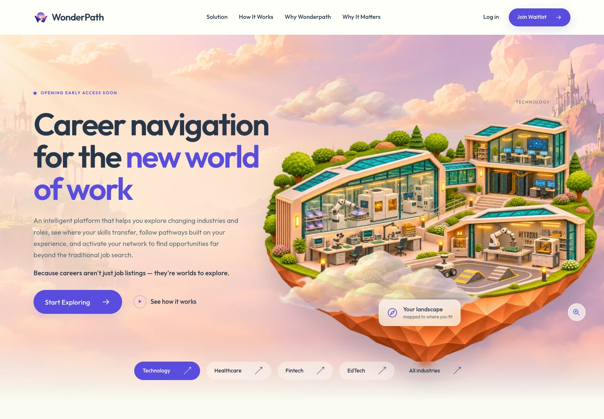
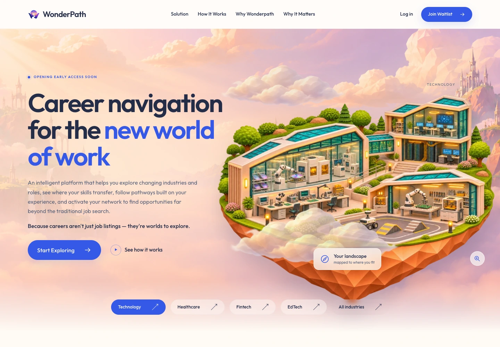
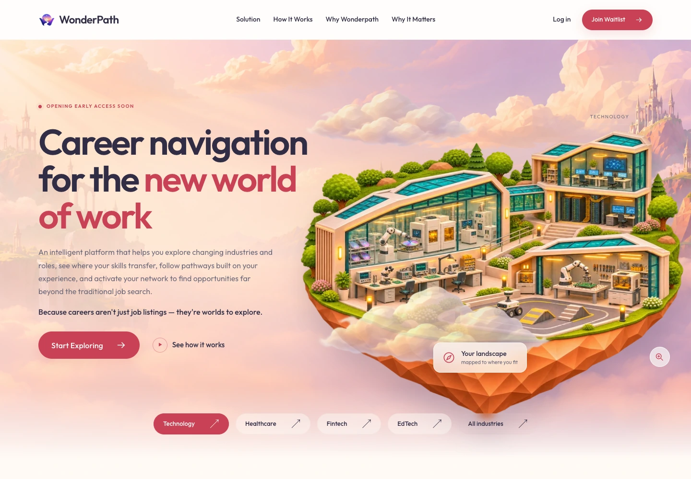

Electric Orchard
#584CDD#148F76#DDF475#FAFBF1A little wild. A lot of possibility.
Fresh greens, electric violet, and a sunny spark. Our current direction.
Explore this paletteA STUDY IN POSSIBILITY
One journey. Three ways to see it.
Find the color world that feels like your next chapter.

Fresh greens, electric violet, and a sunny spark. Our current direction.
Explore this palette
Clear cobalt, deep teal, and warm coral. An open sky for what comes next.
Explore this palette
Poppy red, soft pink skies, and a touch of turquoise. A brighter kind of brave.
Explore this palette